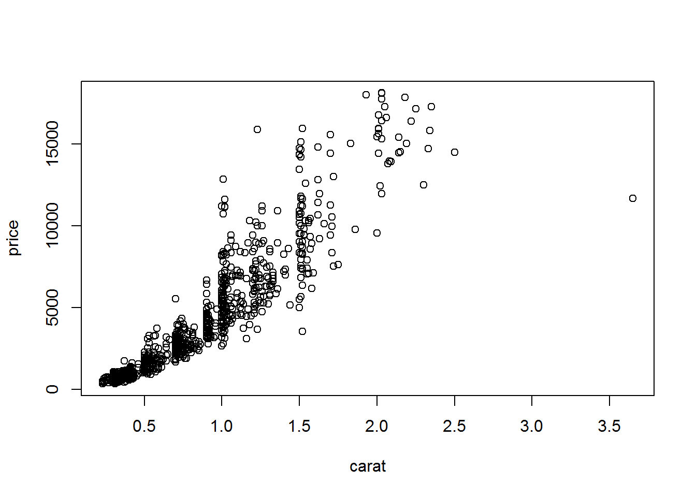
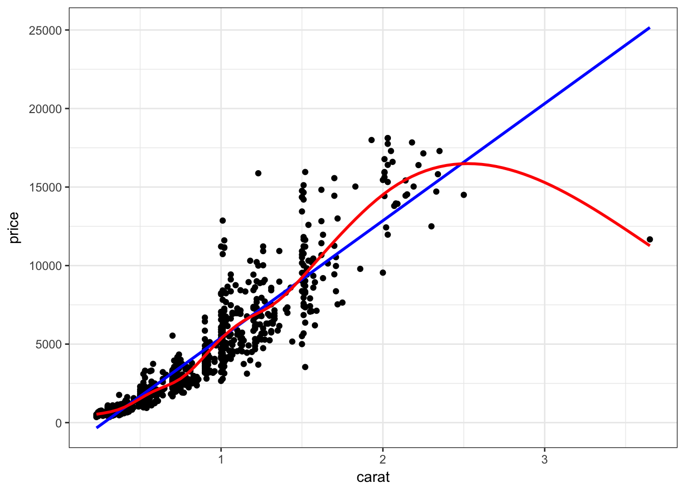
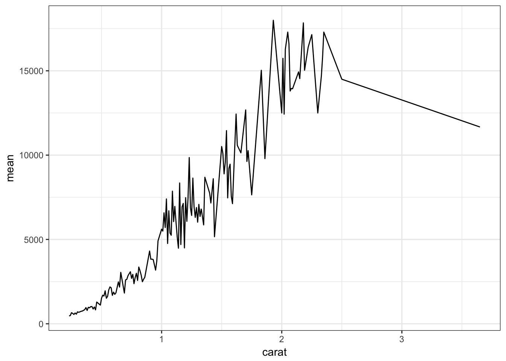

2.4 Bivariate Visualizations
2.4.1 Categorical v. Categorical
2.4.1.1 Two-way Frequency tables
Cross-tabs, cross-tabulations and two-way tables (all the same thing, different names) can be created by using the table() function.
The frequency table is constructed using the table() function.
table(dsmall$cut, dsmall$color)
##
## D E F G H I J
## Fair 5 6 7 4 5 4 3
## Good 18 23 11 16 17 7 7
## Very Good 26 37 46 40 33 25 13
## Premium 34 53 43 49 41 24 13
## Ideal 54 63 79 92 53 34 15There are 4 Fair diamonds with color D, and 21 Ideal quality diamonds with color J.
2.4.1.2 Two-way Proprtion tables
Choose your percentages depending on your research question. What are you wanting to compare?
Best practices:
- Explanatory variable on the rows
- Response variable on the columns
- Calculate row %’s as the % of the response for each explanatory group.
Here are demonstrations of how the interpretation of the percents change depending on what the denominator is.
Cell proportions
Wrapping prop.table() around a table gives you the cell proportions.
prop.table(table(dsmall$cut, dsmall$color))
##
## D E F G H I J
## Fair 0.005 0.006 0.007 0.004 0.005 0.004 0.003
## Good 0.018 0.023 0.011 0.016 0.017 0.007 0.007
## Very Good 0.026 0.037 0.046 0.040 0.033 0.025 0.013
## Premium 0.034 0.053 0.043 0.049 0.041 0.024 0.013
## Ideal 0.054 0.063 0.079 0.092 0.053 0.034 0.0150.4% of all diamonds are D color and Fair cut, 2.1% are J color and Ideal cut.
Row proportions
To get the row proportions, you specify margin=1. The percentages now add up to 1 across the rows.
round(prop.table(table(dsmall$cut, dsmall$color), margin=1),3)
##
## D E F G H I J
## Fair 0.147 0.176 0.206 0.118 0.147 0.118 0.088
## Good 0.182 0.232 0.111 0.162 0.172 0.071 0.071
## Very Good 0.118 0.168 0.209 0.182 0.150 0.114 0.059
## Premium 0.132 0.206 0.167 0.191 0.160 0.093 0.051
## Ideal 0.138 0.162 0.203 0.236 0.136 0.087 0.03814.8% of all Fair quality diamonds are color D. 5.4% of all Ideal quality diamonds have color J.
Column proportions
To get the column proportions, you specify margin=2. The percentages now add up to 1 down the columns.
round(prop.table(table(dsmall$cut, dsmall$color), margin=2),3)
##
## D E F G H I J
## Fair 0.036 0.033 0.038 0.020 0.034 0.043 0.059
## Good 0.131 0.126 0.059 0.080 0.114 0.074 0.137
## Very Good 0.190 0.203 0.247 0.199 0.221 0.266 0.255
## Premium 0.248 0.291 0.231 0.244 0.275 0.255 0.255
## Ideal 0.394 0.346 0.425 0.458 0.356 0.362 0.2942.7% of all D color diamonds are of Fair quality. 44.7% of all J color diamonds are of Ideal quality.
2.4.1.3 Grouped bar charts
To compare proportions of one categorical variable within the same level of another, is to use grouped barcharts.
base As before, the object to be plotted needs to be the result of a table.

Stacked bars can be difficult to interpret, and very difficult to compare values between groups. A side by side barchart is preferable.
The beside=TRUE is what controls the placement of the bars.

ggplot
Again plot the cut on the x axis, but then fill using the second categorical variable. This has the effect of visualizing the row percents from the table above. The percent of color, within each type of cut.

Again the default is a stacked barchart. So we just specify position=dodge to put the bars side by side.

And look, an automatic legend. What if I wanted to better compare cut within color group? This is the column percentages. Just switch which variable is the x axis and which one is used to fill the colors!

For more than 2 colors I do not recommend choosing the colors yourself. I know little about color theory so I use the built-in color palettes. Here is a great cheatsheet about using color palettes.
And this easy change is why we love ggplot2.
2.4.2 Grouped bar charts with percentages
Not as easy as one would hope, but the solution is to calculate the desired percentages first and then plot the summary data using either geom_bar(stat='identity') or geom_col().
calc.props <- diamonds %>% group_by(color, cut) %>%
summarise(count=n()) %>%
mutate(pct=round(count/sum(count),3))
calc.props
## # A tibble: 35 × 4
## # Groups: color [7]
## color cut count pct
## <ord> <ord> <int> <dbl>
## 1 D Fair 163 0.024
## 2 D Good 662 0.098
## 3 D Very Good 1513 0.223
## 4 D Premium 1603 0.237
## 5 D Ideal 2834 0.418
## 6 E Fair 224 0.023
## 7 E Good 933 0.095
## 8 E Very Good 2400 0.245
## 9 E Premium 2337 0.239
## 10 E Ideal 3903 0.398
## # … with 25 more rowsSince we’re plotting summary data, the height of the bars is specified using y=pct.

Now set some options to the y axis using scale_y_continuous() to make the graph more accurate and readable. The labels=percent comes from the scales package.
library(scales)
ggplot(calc.props, aes(x=color, fill=cut, y=pct)) +
geom_col(position="dodge") + theme_bw() +
scale_y_continuous(limits=c(0,1), labels=percent)

2.4.2.2 Mosaic plots
But what if you want to know how two categorical variables are related and you don’t want to look at two different barplots? Mosaic plots are a way to visualize the proportions in a table. So here’s the two-way table we’ll be plotting.
table(dsmall$cut, dsmall$color)
##
## D E F G H I J
## Fair 5 6 7 4 5 4 3
## Good 18 23 11 16 17 7 7
## Very Good 26 37 46 40 33 25 13
## Premium 34 53 43 49 41 24 13
## Ideal 54 63 79 92 53 34 15The syntax for a mosaic plot uses model notation, which is basically y ~ x where the ~ is read as “twiddle” or “tilde”. It’s to the left of your 1 key.

Helpful, ish. Here are two very useful options. In reverse obviousness, color applies shades of gray to one of the factor levels, and shade applies a color gradient scale to the cells in order of what is less than expected (red) to what is more than expected (blue) if these two factors were completely independent.
par(mfrow=c(1,2)) # display the plots in 1 row and 2 columns
mosaicplot(cut~color, data=dsmall, color=TRUE)
mosaicplot(cut~color, data=dsmall, shade=TRUE)
For example, there are fewer ‘Very Good’ cut diamonds that are color ‘G’, and fewer ‘Premium’ cut diamonds that are color ‘H’. As you can see, knowing what your data means when trying to interpret what the plots are telling you is essential.
That’s about all the ways you can plot categorical variables.
If you are wondering why there was no 3D barcharts demonstrated see
here,
here, and
here for other ways you can really screw up your visualization.
2.4.3 Continuous v. Continuous
2.4.3.1 Scatterplot
The most common method of visualizing the relationship between two continuous variables is by using a scatterplot.
base
Back to the plot() command. Here we use model notation again, so it’s \(y~x\).

Looks like for the most part as the carat value increases so does price. That makes sense.
ggplot With ggplot we specify both the x and y variables, and add a point.

Other Resources
2.4.3.2 Adding lines to the scatterplots
Two most common trend lines added to a scatterplots are the “best fit” straight line and the “lowess” smoother line.
base
The best fit line (in blue) gets added by using the abline() function wrapped around the linear model function lm(). Note it uses the same model notation syntax and the data= statement as the plot() function does. The lowess line is added using the lines() function, but the lowess() function itself doesn’t allow for the data= statement so we have to use $ sign notation.
plot(price~carat, data=dsmall)
abline(lm(price~carat, data=dsmall), col="blue")
lines(lowess(dsmall$price~dsmall$carat), col="red")
ggplot
With ggplot, we just add a geom_smooth() layer.

Here the point-wise confidence interval for this lowess line is shown in grey. If you want to turn the confidence interval off, use se=FALSE. Also notice that the smoothing geom uses a different function or window than the lowess function used in base graphics.
Here it is again using the ggplot plotting function and adding another geom_smooth() layer for the lm (linear model) line in blue, and the lowess line (by not specifying a method) in red.
ggplot(dsmall, aes(x=carat, y=price)) + geom_point() +
geom_smooth(se=FALSE, method="lm", color="blue") +
geom_smooth(se=FALSE, color="red")
2.4.3.3 Line plots
Line plots connect each dot with a straight line. This is most often done when measuring trends of the response as the value of x increases (such as a time series)
We saw earlier that carat and price seemed possibly linear. Let see how the average price changes with carat.
base
For base graphics, type=‘b’ means both points and lines, ‘l’ gives you just lines and ‘p’ gives you only points. You can find more plotting character options under ?pch.

ggplot With ggplot we specify that we want a line geometry only.

How does this relationship change with cut of the diamond? First lets get the average price per combination of carat and cut.
base This plot can be created in base graphics, but it takes an advanced knowledge of the graphics system to do so. So I do not show it here.
ggplot This is where ggplot starts to excel in it’s ease of creating more complex plots. All we have to do is specify that we want the lines colored by the cut variable.

And we get one line per cut.
2.4.4 Continuous v. Categorical
Create an appropriate plot for a continuous variable, and plot it for each level of the categorical variable.
2.4.4.1 Dotplot/strip chart
Dotplots can be very useful when plotting dots against several categories. They can also be called stripcharts.
base

Doesn’t look to pretty, but kinda gets the point across. Few fair quality diamonds in the data set, pretty spread out across the carat range except one high end outlier.
ggplot We can reproduce the same thing by plotting one continuous variable against one categorical variable, and adding a layer of points. I’d argue that horizontal looks better due to the axis-labels.
a <- ggplot(dsmall, aes(y=carat, x=cut)) + geom_point()
b <- ggplot(dsmall, aes(y=cut, x=carat)) + geom_point()
grid.arrange(a, b, ncol=2)
2.4.4.2 Grouped boxplots
base
Base graphics plots grouped boxplots with also just the addition of a twiddle (tilde) ~.
Another example of where model notation works.

ggplot A simple addition, just define your x and y accordingly.

Adding violins Violin plots can be overlaid here as well.
ggplot(dsmall, aes(x=color, y=carat, fill=color)) +
geom_violin(alpha=.1) +
geom_boxplot(alpha=.5, width=.2)
2.4.4.3 Grouped histograms
base There is no easy way to create grouped histograms in base graphics we will skip it.
ggplot By default ggplot wants to overlay all plots on the same grid. This doesn’t look to good with histograms. Instead you can overlay density plots
a <- ggplot(dsmall, aes(x=carat, fill=color)) + geom_histogram()
b <- ggplot(dsmall, aes(x=carat, fill=color)) + geom_density()
grid.arrange(a,b, ncol=2)
The solid fills are still difficult to read, so we can either turn down the alpha (turn up the transparency) or only color the lines and not the fill.
c <- ggplot(dsmall, aes(x=carat, fill=color)) + geom_density(alpha=.2)
d <- ggplot(dsmall, aes(x=carat, col=color)) + geom_density()
grid.arrange(c,d, ncol=2)